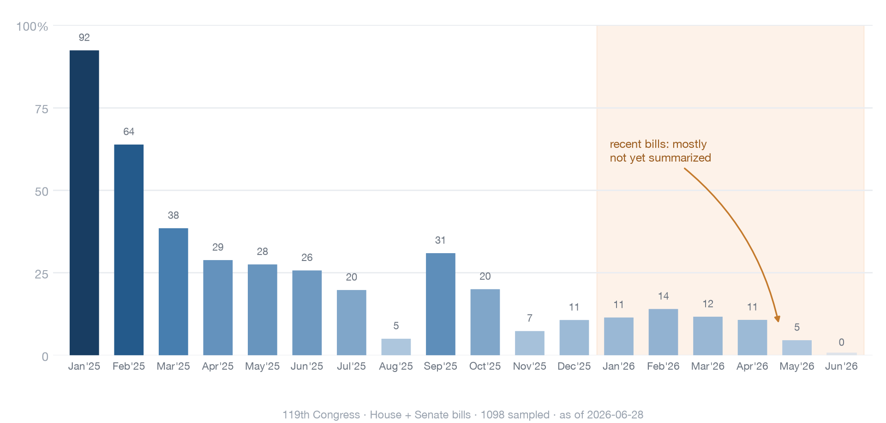

How far behind is CRS?
CRS writes excellent summaries — but slowly, and not for every bill. This is the other half of the story behind the benchmark: a high-quality human summary is worth little if it doesn't exist yet. Below, the share of 119th-Congress bills that have a CRS summary, by when each bill was introduced.
Loading…

What this shows
"How behind" is really two effects, and they're entangled here:
- A timing lag. A freshly introduced bill has almost no chance of a CRS summary — coverage stays near zero for months and only builds over a year-plus.
- Selective coverage. CRS doesn't summarize every bill, so coverage plateaus well below 100% even for the oldest bills (many minor bills that die in committee never get one).
Read this as how much of the recent legislative record is covered, not a precise days-to-summarize figure. It sharpens the benchmark's point: CRS summaries score ~94–98% on the rubric, but most recent bills don't have one — while the models produce a passable summary instantly for a fraction of a cent.
How it's measured
We take the count of bills that have a CRS summary (from the Congress.gov
/summaries listing), then sample bills across the numbering range, look up each one's
introducedDate, and check whether it has a summary now — giving coverage by introduction
month. We measure whether a summary exists today rather than its exact authoring date, because
Congress.gov's updateDate fields are bulk-refreshed and unreliable for timing. Monthly
samples are ~20–120 bills each, so individual months are noisy. Reproduce with
python src/analyze_lag.py then python src/plot_lag.py.